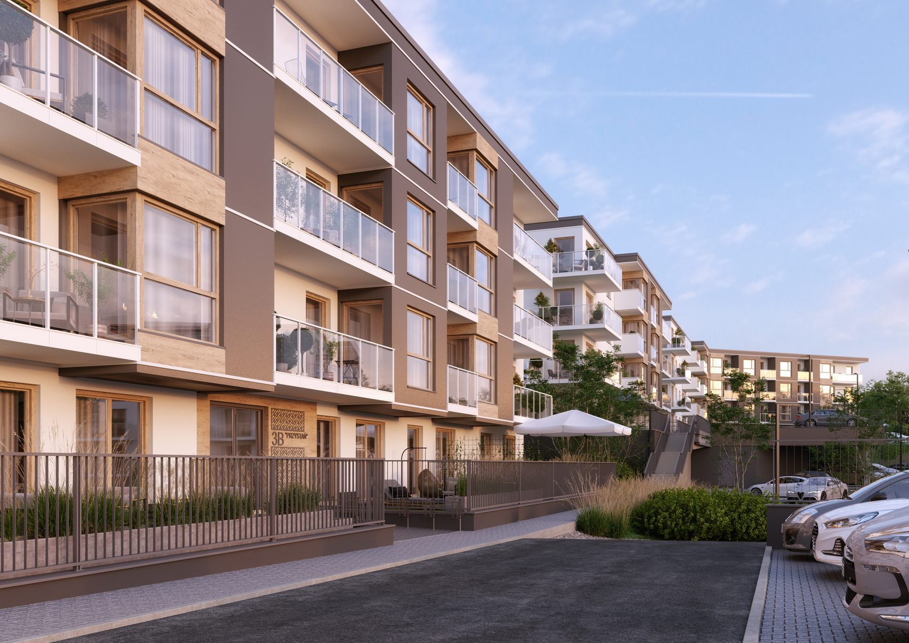
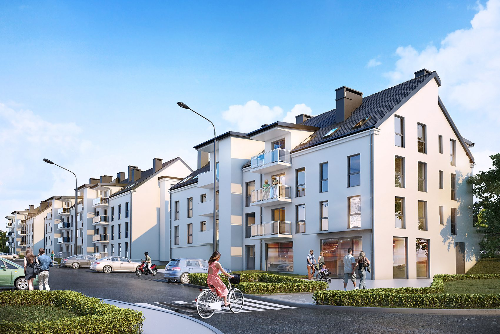
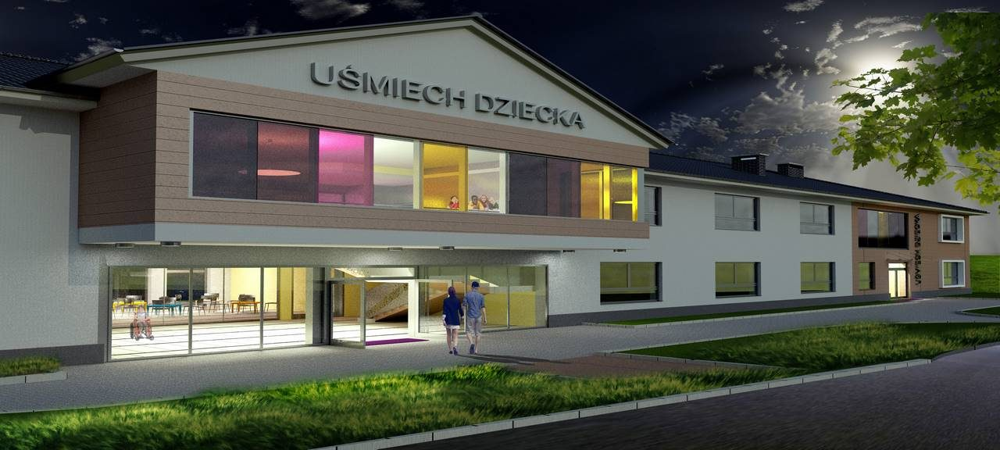

Pracownia
Projektujemy w Kartuzach od 1997 roku
Kim jesteśmy
Jedna pracownia, dwa pokolenia projektantów
Archigraph Inwestycje Sp. z o.o. działa od 2023 roku i jest kontynuacją pracowni Archigraph s.c. Mielewczyk-Kowalski, która przy ul. Kościerskiej w Kartuzach projektuje od 1997 roku.
W zespole są architekci, urbaniści, konstruktorzy budowlani, specjaliści od instalacji i branży drogowej oraz kosztorysanci. Dzięki temu jedno opracowanie obejmuje wszystkie branże potrzebne do pozwolenia na budowę.
Pracujemy na Pomorzu: Kartuzy, Bytów, Żukowo, Sierakowice, Gdańsk, Gdynia, Kwidzyn, Skarszewy.

Konkurs SARP
Kwartał przyrynkowy Starego Miasta w Kwidzynie
Zadaniem konkursowym była koncepcja architektoniczna zabudowy północno-zachodniego kwartału przyrynkowego wraz z zagospodarowaniem terenu. Konkurs prowadził oddział Wybrzeże Stowarzyszenia Architektów Polskich w Gdańsku, inwestorem było Towarzystwo Budownictwa Społecznego w Kwidzynie. Rozstrzygnięcie: maj 2012, praca nr 012.
Zespół autorski: Bogdan Kowalski, Natalia Walaszkowska, Paulina Drosczyńska, Mirosław Mielewczyk.
Zespół
Kto podpisuje się pod projektem
Architekt i konstruktor mają uprawnienia budowlane, ich numery podajemy poniżej. Do każdej osoby można napisać wprost.
Mirosław Mielewczyk
uprawnienia POM/0383/PWBKb/16tel. 603 199 319 archigraph@archigraph.gda.plSkąd się wzięliśmy
Inwestorzy i firmy, z którymi pracujemy
Archigraph wyrósł przy firmie budowlanej, więc projekt od początku powstaje z myślą o tym, jak potem będzie wykonywany.

Kontakt
Porozmawiajmy o Twojej działce
Zadzwoń albo napisz. Umówimy rozmowę w biurze przy ul. Kościerskiej 11 w Kartuzach.